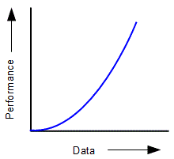

<div id="jsn-maincontent" class="span9 order1 row-fluid">
  <div id="jsn-maincontent_inner">
    <div id="jsn-centercol">
      <div id="jsn-centercol_inner">
        <div id="jsn-mainbody-content" class="jsn-hasmainbody">
          <div id="jsn-mainbody-content-inner1">
            <div id="jsn-mainbody-content-inner2">
              <div id="jsn-mainbody-content-inner3">
                <div id="jsn-mainbody-content-inner4" class="row-fluid">
                  <div id="jsn-mainbody-content-inner" class="span12 order1">
                    <div id="jsn-mainbody">
                      <div id="system-message-container"></div>

                      <div
                        class="item-page"
                        itemscope
                        itemtype="https://schema.org/Article"
                      >
                        <meta itemprop="inLanguage" content="en-GB" />

                        <div itemprop="articleBody">
                          <p></p>
                          <h1 style="text-align: center">
                            Polynomial&nbsp;execution performance&nbsp;e.g.
                            O(N<sup>2</sup>) or O(N<sup>3</sup>) etc
                          </h1>
                          <p>
                            <strong style="line-height: 1.5"
                              >Polynomial execution time O(N<sup>2</sup>)<br /></strong
                            >An big O description such as
                            O(N<sup>2</sup>)&nbsp;or O(N<sup>3</sup>) and so
                            on&nbsp;describes an algorithm whose performance is
                            related to a polynomial.
                            <span style="line-height: 16.3636360168457px"
                              >The time an algorithm takes to run increases at a
                              faster rate than the increase in the size of the
                              input.&nbsp;</span
                            >In the case of
                            <span style="line-height: 16.3636360168457px"
                              >O(N</span
                            ><span
                              style="
                                bottom: 0.3em;
                                font-size: 0.8em;
                                position: relative;
                                vertical-align: baseline;
                              "
                              >2</span
                            ><span style="line-height: 16.3636360168457px"
                              >)</span
                            ><span style="line-height: 16.3636360168457px"
                              >&nbsp;for example, the performance is&nbsp;</span
                            >proportional to the square of the amount of data.
                            In other words, if you enter 2 data items, the
                            performance is 4. If you enter 3 data items, the
                            performance is 9. If you enter 4 data items, the
                            performance is 16. If you enter 5 data items, the
                            performance is 25. We can show this as a graph.
                          </p>

                          <p>
                            
                          </p>
                          <p class="QuestionStyle">
                            <strong>An example in Python</strong><br /><span
                              style="line-height: 16.3636360168457px"
                              >A good example of an algorithm with this kind of
                              Big O characteristic O(N<sup>2</sup>) is a bubble
                              sort. The performance of a bubble sort is greatly
                              reduced the more data items there are that you
                              have to sort through. In fact, any algorithm where
                              there are nested iterations will probably show
                              this characteristic.</span
                            >
                          </p>
                          <p class="QuestionStyle">
                            <span style="line-height: 16.3636360168457px"
                              ><a
                                href="/index.php/algorithms-and-problem-solving-2/2-3-algorithms/2-3-1-algorithms/sorting-algorithms/3384-an-introduction-to-algorithm-for-bubble-sorting"
                                target="_blank"
                                >You can see how a bubble sort works here.</a
                              ><br /><a
                                href="/index.php/algorithms-and-problem-solving-2/2-3-algorithms/2-3-1-algorithms/sorting-algorithms/3385-an-algorithm-and-python-code-for-bubble-sorting"
                                target="_blank"
                                >You can see the pseudo-code for a bubble sort
                                here.</a
                              ><br /><a
                                href="/index.php/algorithms-and-problem-solving-2/2-3-algorithms/2-3-1-algorithms/sorting-algorithms/3386-bubble-sorting-answers"
                                target="_blank"
                                >You can see the Python code for a bubble sort
                                here.</a
                              ><br
                            /></span>
                          </p>
                          <p class="QuestionStyle">
                            Once you have your bubble sort working, you can
                            count the comparisons as we did for the linear
                            example O(N). You will see that the number of
                            comparisons you have to make goes up considerably
                            with the number of data items you have to search
                            through.
                          </p>
                          <p class="QuestionStyle"></p>
                        </div>
                      </div>
                    </div>
                  </div>
                </div>
              </div>
            </div>
          </div>
        </div>
      </div>
    </div>
  </div>
</div>
